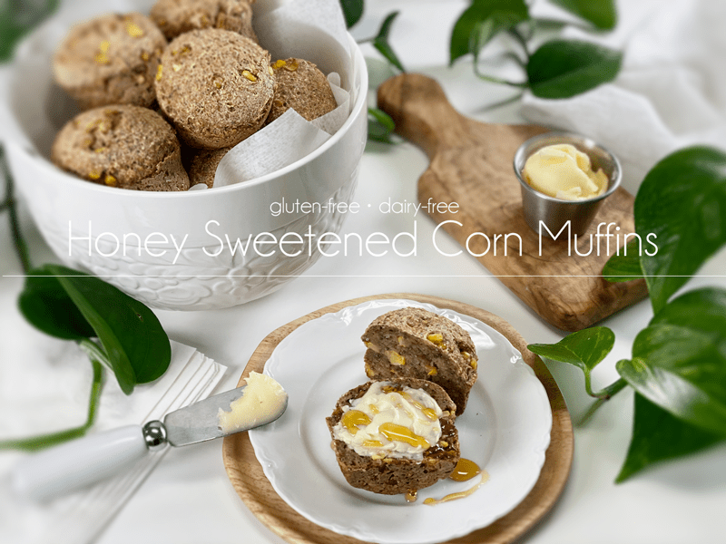
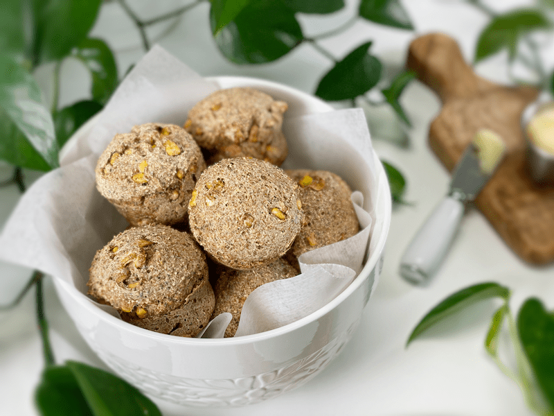
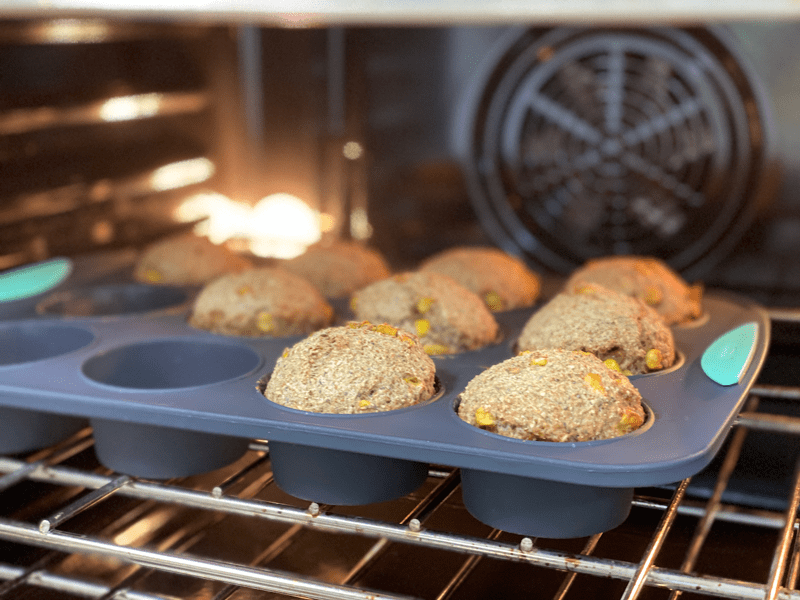

Honey Sweetened Corn Muffins | Baked | Vegan Option | Oil-Free | Gluten-Free
These gluten-free vegan Honey Sweetened Corn Muffins have just a hint of sweetness and a wonderful chewy texture. These muffins go perfectly with a warm bowl of homemade vegan chili, soup, or snuggled beside a rainbow-filled salad. I purposely created these to not be overly sweet, with just enough sweetener to support the natural sugars found in corn. Bob and I enjoyed these almost daily last week while we slurped our soup to beat the winter chill. Warm soup, corn muffins, and winter … what a beautiful trio.

I want to start off by pointing out that this isn’t a cornbread recipe. Instead, it’s a lovely muffin that houses sweet corn. The texture of these muffins is moist and chewy (thanks to the corn). The flavor of the muffins is moderately sweet with lovely pockets of sweet corn. The key is to use organic (NON-GMO), good quality corn. If the corn doesn’t taste good before adding to the batter, it won’t improve much through the baking process.
Sweet Corn Kernels
- If at all possible, use sweet corn for this recipe. What is sweet corn? It is specifically bred for its sweet taste, is harvested when kernels are at the milk stage, and is fairly high in moisture content.
- Fresh is best, but frozen is a great option. I ended up using organic frozen sweet corn that I purchased from Costco last summer. When using frozen, be sure to thaw it completely before adding it to the recipe.

I can’t let a recipe squeak by without highlighting some of the main ingredients. Understanding why and how I use ingredients equals success in the kitchen. Success in the kitchen equals delicious and nutritious foods, which make for a happy soul.
Why I Use Oat Flour
- Oat flour is made by simply grinding rolled oats! The result is a superfine, fluffy, and sweet flour that will make baked goods chewier and helps to create a great crumb.
- If you have any type of intolerance to gluten, be sure that you seek out a brand that is certified gluten-free, which assures us that they haven’t been cross-contaminated with gluten-containing grains.
- Oats contain avenin, which can cause some reactions in people. To learn more about this click (here).
- Want to Ramp Up the Nutrition? (optional) Learning to soak rolled oats will help to neutralize a portion of the phytic acid, which makes the nutrients available for better absorption. This process may even lessen sensitivity reactions to oats. It involves soaking, dehydrating, and grinding to flour. If you are interested in learning more about this technique, click (here).
Why I Use Buckwheat Flour
- Buckwheat offers an assertive, earthy flavor that is great in these muffins.
- For this recipe, I ground my own buckwheat flour. I personally think the flavor is superior to commercially ground buckwheat flour. I used my Vitamix blender for this 30-second task. If you want to geek out on making your own buckwheat flour, click (here).
- I use the following brand. Click (here).
- Want to learn more about buckwheat, including how it is grown, harvested, and used in the industry? Click (here). Learning where our food comes from is invaluable!
- Want to Ramp Up the Nutrition? (optional) Just as I mentioned with the oats, soaking, sprouting (another option), and dehydrating all before grinding into flour will up the nutritional value. This is an extra step but well worth it. A good habit to get into is to soak, sprout, and dry large amounts of buckwheat ahead of time so all you have to do is grind the amount needed when making this bread (or any other recipe). To learn how, click (here).
Whole Psyllium Husks
- Psyllium husks are added to give the muffins a spongy bread-like texture. Psyllium is one of nature’s most absorbent fibers–they can absorb over ten times their weight in water. As psyllium thickens when liquid is added, it is known to help get things moving in the digestion area. So, If you are eating recipes that contain these husks, please be sure to drink plenty of water throughout the day.
- There is NO replacement for psyllium in this recipe. I’m going to put my foot down and stand firm on this statement.
- Psyllium husks come in different grades of purity, which affects the color of the husks, which range from brown to off-white color. Lower-quality psyllium can give a purplish hue to your bread, so try to use a high-quality brand.
- Brands that I recommend: Organic India, Psyllium, Whole Husk, 12 oz, Herbal Secrets USDA Certified Organic Psyllium Husk, Anthony’s Organic Whole Psyllium Husks, and Indus Organics Psyllium Husk Whole, 1 Lb Bag, Premium Grade, High Purity.
It’s that time… time to create some dirty dishes and reap the reward with these mighty fine-tasting Honey Sweetened Corn Muffins. blessings, amie sue
 Ingredients
Ingredients
Yields 10 (1/2 cup batter per muffin)
- 1 cup raw whole buckwheat kernels, soaked
- 1 1/2 cups gluten-free rolled oats
- 1/4 cup chia seeds
- 1/4 cup whole psyllium husks (not powder)
- 1/4 cup maple syrup or raw honey
- 1 1/2 cups water or coconut milk
- 1 tsp sea salt
- 1 tsp aluminum-free baking powder
- 1/2 tsp baking soda
- 1 cup sweet corn kernels
Preparation
Soaking the Buckwheat
- Place the buckwheat in a glass or stainless steel bowl, and cover with double the amount of water.
- Add 2 Tbsp raw apple cider vinegar, stir, and cover with a clean dishtowel.
- Let it sit on the counter for 30 minutes to 4 hours.
- Once ready to use, drain and rinse before adding to the food processor.
Mixing and Baking
- Preheat the oven to 350 degrees (F) and prepare your baking pan.
- I am baking the muffins in a silicone muffin pan; therefore I don’t need any oil or parchment paper to line it.
- If you use any other type of pan, I recommend lining with muffin tins with cupcake liners so the muffins don’t stick.
- In the food processor, fitted with the “S” blade, combine the drained and soaked buckwheat, rolled oats, chia seeds, psyllium husks (not powder), maple syrup or honey, water, baking powder, baking soda, and salt to the food processor. Process until all the ingredients are broken down.
- You can use coconut milk in place of the water for more moisture.
- Corn: You can add it to the food processor and just pulse it a few times to create little bits throughout the muffins, or you can hand mix it in, as I did.
- Slide the muffin tin in the center rack of the oven and back for 45 minutes or until done.
- Once done baking, remove the pan and dump the muffins onto a cooling rack. Do not keep it in the pan, or they can get soggy bottoms.
- Cut once cooled, and enjoy!
Storage
- Once cooled, you can store the muffins in an airtight container on the counter for a few days, or in the fridge for around 5 days.
- You can also keep them in the freezer, thawing at room temperature when you are ready to enjoy them.

© AmieSue.com